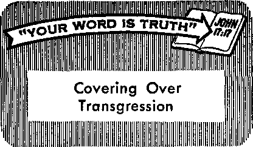

Who Are the Criminals?
PAGE 3
Spring's Chorus on Wings
PAGE 8
Understanding the Change in a Woman's Life
PAGE I 2
An Outing with Grandpa
PAGE IT*
JUNE 22. 1969
THE REASON FOR THIS MAGAZINE
News sources that are able to keep you awake to the vital issues of our times must be unfettered by censorship and selfish interests. "Awake!" has no fetters, it recognizes facts, faces facts, is free to publish facts. It is not bound by political ties; it is unhampered by traditional creeds. This magazine keeps itself free, that it may speak freely to you. But it does not abuse its freedom. It maintains integrity to truth.
The viewpoint of “Awakel" is not narrow, but is international. “Awakel" has its own correspondents in scores of nations. Its articles are read in many lands, in many languages, by millions of persons.
In every issue “Awakel" presents vital topics on which you should be informed, ft features penetrating articles on social conditions and offers sound counsel for meeting the problems of everyday life. Current news from every continent passes in quick review. Attention Is focused on activities in the fields of government and commerce about which you should know. Straightforward discussions of religious issues alert you to matters of vital concern. Customs and people in many lands, the marvels of creation, practical sciences and points of human interest are all embraced in its coverage. "Awakel" provides wholesome, instructive reading for every member of the family,
“Awake!'' pledges itself to righteous principles, to exposing hidden foes and subtle dangers, to championing freedom for all, to comforting mourners and strengthening those disheartened by the failures of a delinquent world, reflecting sure hope for the establishment of God's righteous new order in this generation.
Get acquainted with “Awake!" Keep awake by reading "Awake!"
I. ——*UM-Published Simultaneously in ths United States by the WATCHTOWER BIBLE AND TRACT SOCIETY OF NEW YORK, INC.
117 Adams Street Brooklyn, N.Y. 11201, U.S.A.
and in England by WATCH TOWER BIBLE AND TRACT SOCIETY
Watch Tower House, The Ridgeway London N.W. 7, England
N. H. Knorr, President Grant Suiter, Secretary
Average printing each issue: 5,600,000 Now published in 26 languages
5< a copy (Autralla, 5c; Africa,
Yearly subscription ratfs
Oflses for semi monthly edition?
£ nil and, Watch Tower Houee.
New Zealand, 021 New North Rd., Auckland 3
Soifth AfriM, Private Bai 2, P,0, Elandsfontelti, Tv). 70c
(Monthly editions cwt half the abw rates,)
Remittances for aiibseriptlcmi should he sent to the office tn your country. Otherwise eend your remittance to Brooklyn, Notice of expiration 19 sent at least two Issues before subscription ezplres.
Semimonthly—Afrikaans, Cebuano, OaniRh, Diitrb, English, Finnish, French, German, Greek, Uokn, Italian, Japanese, Korean, Norwegian, Portuguese. Spankh, Swedish. Tagalog, Zulu.
Monthly—Chinese, Clnyanja, Hlllgaynon, Malayalam, Polish, Tamil, Ukrainian.
CHANGES OF ADDRESS ihoafd reaah us thirty days before yoar jfiovlni date. Gl« i« your old and a«w addnu (If possible, yoir old address label). Writ* Wateh Tower, Wat«h Tower Hoise, The Ridgeway, London N W- 7f England.
Entered as second-class matter at Brooklyn, N.Y, Printed In England
The Bible translation regilarty used In “Awake!" is the New World Translation «f the Holy Scrlgtares, 1961 edition. When other translations are weed, this Is clearly narked,
|
Who Are the Criminals? |
3 |
An Outing with Grandpa |
17 |
|
Those Troublesome Warts |
7 |
They Are Preparing for You |
21 |
|
Spring's Chorus on Wings |
8 |
A Pillar of Strength |
24 |
|
"Perfect Love Throws Fear Outside” |
11 |
Colorful Marketplaces of Ecuador |
25 |
|
Understanding the Change in a Woman’s Life |
12 |
"Your Word Is Truth” Covering Over Transgression |
27 |
|
Resisting Wicked Spirit Forces |
16 |
Watching the World |
29 |
Volume L Lchdonr England, June 22, 1969 Number 12
AMAN enters a store, pulls out a gun and holds up the cashier. Some $53,000,000 was stolen in this way in the United States alone during one recent year. Yet, in that same year, some $4,000,000,000—more than seventy times as much—was stolen from companies by their own employees!
An armed robber holds up a
How tieep-rootod it criminal behavior today? Will justice ever be completely realized?
bank and gets away with some of the millions of dollars stolen in this way each year. But the ones who get away with even more do not need weapons. They are bank employees who steal nearly twice as much as holdup men do!
Throughout the world shoplifters take hundreds of millions of dollars worth of merchandise each year. But the London Daily Express says: “Staff thefts will account for twice that of customers." Verifying this, the Sunday Bulletin of Philadelphia states: “Once again, the professionals finish a poor second. Shoplifters make off with only about half the amount of plunder that finds its way into the homes of retail store employees."
The Sunday Bulletin adds: “Most crime is committed by people who wear nice, clean shirts to work every day and who get together over lunch in company cafeterias or downtown restaurants to decry the way law and order has broken down in the country.” It called our time a “hypocritical age of doublethink.”
Yes, the facts show that many people who protest the rise in crime are themselves taking far more money and merchandise from their own employers than are the “professional" criminals. Does the fact that these employees do not use weapons make their stealing any less criminal?
There has been a tremendous rise in all kinds of theft world wide. Just one example was noted by the Daily Express when it said about shoplifting: “The menace is growing so fast that we have to make a co-ordinated bid to beat it. Ten years ago it scarcely existed. Even two years ago there wasn’t a fraction of the amount of thieving now going on.” And yet, the greater volume of theft is carried out by seemingly respectable employees who are taking twice as much as the shoplifters.
There are, of course, many really honest persons, but their numbers are dwindling. Those who investigate the matter realize that a large proportion of the general population now often engages in dishonest practices. The Toronto manager of Pinkerton’s Detective Agency said, as reported in the Canadian Weekly:
"In our investigations we've found, as an average, that one out of every three employees is basically dishonest—which means he will seek ways of stealing; that [another] one out of every three employees will be dishonest if given the opportunity.”
That the moral values of much of mankind are rapidly sinking can be seen in any field of human endeavor. Take, for example, sports. Cheating, taking dishonest advantage, is now a "way of life” to millions of weekend sportsmen.
“With some guys it’s a mania. They have to win at all costs,” said Clay Langston, head of a Michigan sports club. A Paris internist explained: “It relaxes me on the weekend to cheat a little at golf.” And Fort Worth publicist Jerry Todd confided: “I’ve played with some certified public accountants who continually seem to forget just how many strokes they used to sink a [golf] ball.”
“Cheating—it’s the name of the game,” said William McCormick, San Francisco manager of a sports car dub. Explained Newsweek:
"Most rules for amateurs are designed to keep engines uniform and emphasize driving skill. Yet at a typical rally there may be three distinct packs—the ‘supercheaters’ in front, the slight cheaters next, the people who follow engine specifications far back.”
To satisfy the ego of some hunters, at French private hunts birds are fed so much meal that they are barely able to fly. Then they are released directly into the line of fire of the hunters’ guns. In Italy, some two million hunters compete for the little wild game left. Many who would otherwise return empty-handed buy pheasants and rabbits, complete with feathers and fur, in stores on the way home. They pass these off as successes of their “hunt.”
Are such sportsmen committing “crimes”? To them it may be just part of the sport to cheat. But would you trust them under the pressure of a business transaction? Will their children know and respect the difference between right and wrong? It is very obvious that many children growing up today do not know this difference. Of youthful shoplifters we read in the Daily Express: “ ‘We get quite a lot of schoolchildren at it who simply regard it as a game,’ said one store security chief. ‘There doesn’t appear to be any kind of social stigma attached to it, and if they are caught it is just hard luck.’ ”
OUT OF EVERY THREE EMPLOYEES—
one is one is dishonest if given one is honest
basically dishonest the opportunity
How good or bad a society is also often reveals itself in the moral tone of its commercial advertising. One advertising executive with thirty years of experience retired with the conviction that advertising in general is based on the "permissible lie.” He said: "A lie that helps build profits is considered a permissible lie.” In his book The Permissible Lie, S, S. Baker charged that the main consideration among advertisers and their agencies is simply: ‘ ‘How much can we get away with?”
Such a case was a TV shave cream commercial. It showed a razor making a clean stroke across a sheet of “sandpaper” that was freshly lathered with the shave cream being advertised. But the Supreme Court of the United States ruled that the demonstration was a "deceptive trade practice.” Why? Because the “sandpaper” was really slick plexiglass. It took real sandpaper eighty minutes to soak in the shave cream before a razor could scrape off a swath of sand!
Some maintain that “the fraudulent advertising practices of a few smear the good practices of the majority.” However, the manager of the New York code office of the National Association of Broadcasters agreed with Baker that it is the other way around, saying: “The fact is that too substantial a number of advertisers who stretch the boundaries of truthfulness simply never get caught.”
How "criminal” is deceitful advertising? Legally speaking, only a few offenders are given a public scolding and told to stop it. But are not such devious practices another indication of a morally degraded culture?
A study was made over a forty-year period of the law-breaking habits of seventy of the largest United States corporations. Every one of them had violated one or more laws and had been convicted from one to fifty times. They averaged thirteen convictions for each corporation. Collectively they scored a total of 307 adverse decisions on charges of restraint of trade; 222 infringements; 158 violations of the National Labor Relations Law; 97 condemnations for false advertising; and 196 other violations.
In some places there are ‘ ‘habitual criminal” laws that impose severe penalties on criminals convicted the third and fourth time. Were such laws to be applied to these corporations, about 90 percent of those studied would be regarded as habitual criminals!
About 75 percent of the national banks examined in a particular quarter were found to be violating the national banking laws. And what was found to be the root cause in most bank failures? Dishonesty on the part of employees, usually bank officials.
Insurance frauds are enormous, on the part of both the insured and the insurer. Murders are committed, houses burned, automobiles destroyed, and sickness or injury feigned to collect insurance. However, Principles of Criminology says: “The insurance company is seldom free to prosecute for fraud, for it seldom has clean hands ... it makes a settlement at the lowest possible figure . . . claim agents, lawyers, and physicians for the insurance company frequently practice misrepresentation.”
The same source charges that “in some cities, any purchase of commodities which is strictly honest is an oversight.” Public officials take bribes in connection with the purchase of supplies, the making of contracts, the enforcement of regulations, and the enactment of legislation.
And what examples do national leaders often set? In the heyday of Adolph Hitler the German people shouted: “Fuehrer, command! We will follow you!” Twenty years later, a United Press Internationa] survey said on May 5, 1965: “They [the Germans] realize now he was at best a maniacal genius and at worst a coldblooded killer who wanted to take them all with him.” Hitler’s henchmen and extermination camp operators are still being hunted down and prosecuted for crimes against humanity. Yet, we are often told that if the Axis powers had won the war, they would have prosecuted officials of the opposing side for their “crimes.”
Nazi Germany is no lone monument to criminal behavior by nations. Time after time the nations have gone on the rampage and killed thousands, yes, millions of innocent men, women and children by their wars. A man who murders another is prosecuted by the law. Then what of nations that kill millions of people, many of whom are not even soldiers but who are helpless men, women and children?
It is considered a crime to break into someone else’s home and take his property. Also, if a corporation steals patents or processes from other companies it can be prosecuted. Such is considered criminal behavior. Yet, nearly every nation sends spies into the territory of other nations to obtain their secrets. Why is it criminal behavior when an individual or a company does it, and not when a nation does it?
In 1960, when a United States U-2 aircraft was missing in Russia, American officials announced that it was simply a weather craft gone astray. However, it was then announced by the Russians that the plane had been shot down deep inside Russia and the pilot captured. He admitted that it was a spy plane. Not only had it intruded into another’s territory illegally, but government officials had been caught lying about it to the entire world.
Telling a lie in a court of law is perjury, a punishable offense. But on December 6, 1963, Arthur Sylvester, then United States Assistant Secretary of Defense for Public Affairs, told a press gathering that it was the inherent right of a government “to lie to save itself.” But why should an individual be prosecuted for an official lie, and governments not?
So when a citizen breaks and enters someone else’s property, lies, steals and kills, he is called a criminal and is punished. What, then, of entire nations that have done the same on a massive scale?
Yes, there is a fantastic rise in “organized” crime, of murders, rapes, muggings, robberies and the like by “professional” criminals. The press comments regularly about this. But not as well understood is the fact that there is a corresponding gigantic rise in criminal behavior and attitude that is saturating masses of people and leaders alike.
Will this crime-ridden world never be brought before the bar of justice? Will criminal men and nations forever trample down truth, honesty, integrity, decency and morality?
Not at all. The Bible, God’s Word, warns: "Each of us will render an account for himself to God” for his behavior. (Rom. 14:12) God’s Word also puts it this way:
"Jehovah has a legal case with the inhabitants of the land, for there is no truth nor loving-kindness nor knowledge of God in the land. There are the pronouncing of curses and practicing of deception and murdering and stealing and committing of adultery that have broken forth, and acts of bloodshed have touched other acts of bloodshed.” —Hos. 4:1, 2.
Just as Almighty God executed judgment against apostate Israel of ancient times, so he will do so against this modem system of things. When God concludes his legal case against all earth's inhabitants, those who have mocked honesty and morality will pay the price. Only persons who have taken the time to determine what is right in God’s sight, and who have sincerely endeavored to practice it, will receive favorable judgment: “The upright are the ones that will reside in the earth, and the blameless are the ones that will be left over in it. As regards the wicked, they will be cut off from the very earth; and as for the treacherous, they will be tom away from it.’’—Prov. 2:21, 22.
A HAND with one or more ugly warts may not be pleasant to look at. Think how distressing warts can be to a girl whose natural desire is to have lovely hands. A boy too can be upset by their ugly appearance and annoyed with their constantly getting in his way when he works. But the hands are not the only place on the body where warts can appear.
Sometimes a wart will grow on the sole of a person's foot, making walking a painful process for him. When they grow there they are usually called plantar warts. They can, in fact, grow on almost any part of the skin, but most often they appear on the hands, fingers and soles of the feet. Since there are various kinds of warts, they vary in color, some being white, others varying from yellow to brown and still others being black or green.
Doctors are firmly convinced that warts are caused by a virus that can be transmitted from one person to another. In fact, the virus has been maintained in a tissue culture and has been photographed by an electron microscope.
When warts disappear spontaneously, ft is thought that the person built up a state of relative immunity to them. Surprisingly, however, they will, at times, disappear from what appears to have been nothing more than suggestion. This is especially true of young children. A doctor might paint a wart with nothing more than tap water or touch it with an unusual object, assuring the child that this will cause the wart to disappear, and it very often does in the space of from one to eight weeks. It was observed, in The Practitioner of May 1967, that the "wart virus is the only one producing lesions which can be influenced by the emotions.” Children seem to respond much better to suggestion than adults.
Writing in the Journal of the Indiana State Medical Association, Dr. John A. Crawford stated in the October 1967 issue: "I have usually outwaited these crops of warts and have seen them disappear with little or no treatment.” But this does not always work. So he went on to mention a treatment that he has used with a certain amount of success. "Injection with 'Keramin,' a proprietary vitamin A preparation, has been strangely successful, but I have no really scientific evidence to support its use.”
Interestingly, a nutritionist also mentioned vitamin A as being effective in getting rid of warts. Adelle Davis states, in her book Let’s Get Well, that she has seen several cases where warts disappeared within a few weeks after 100,000 units of vitamin A were taken daily and 300 units of vitamin E. After four weeks the vitamin A was reduced to 50,000 units daily.
Sometimes surgery is used to remove a wart, but this treatment leaves a scar, and when it is on the sole of the foot it can cause a tenderness that might be as troublesome as the wart was. Burning a wart with an electric needle can be effective if the treatment is thorough.
At present no form of treatment is wholly satisfactory for every case of warts. One may be fine for one person but not for another. But since there are ways of getting rid of warts, a person need not feel that he will have to go through life with ugly warts disfiguring his hands.
LISTEN! The happy voices of spring are once again filling the air! It is the singing of a most beautiful chorus. Its joyful songs praise God and make glad the hearts of men. Spring is here in all its exhilarating glory, and how delightfully it is announced! A gaily colored chorus on wings! Robins, sparrows, bluebirds, thrushes, and many other birds each add their tiny voices to the tuneful choir. Their merry music signals the end of winter’s long reign.
Trilling, warbling, whistling in many different keys, waves of gay-feathered troubadours arrive to herald the unfolding beauty of springtime in earth’s northern regions. They appear to be singing for the sheer joy of having successfully made the long journey from their winter quarters in the south. How welcome their warm, cheerful melodies are to northern inhabitants who have been held in winter’s long, cold grip. Such Jilting singing awakens in them the delightful anticipation of again seeing the landscape renewed with the fresh growth of lush greenery.
The bel canto of these feathered songsters and their aerial acrobatics are so happifying that, at this time of year, folks, young and old, seem to walk with a spring to their step. Ah, yes, the warming up of the days by the spring sun’s bathing the earth, the blossoming meadows and forests rich with the delicious scent of fresh flowers and new plant life make spring an exquisite delight. The pleasant sensations associated with this lovely season make one glad to lie alive! God-fearing persons are moved to thank and praise the Creator, who arranged it all.
The formation of spring’s feathered chorus begins when the days in the northern part of the earth lengthen and the sun’s warm rays strengthen. Then winged migrants wintering in southern lands are gripped with the instinctive urge to fly back to their home nesting grounds. The songbirds indigenous to North America travel various distances in their trip north. Millions of tiny wings carry these colorful creatures from the southern United States, Central America and South America as far as Argentina.
Winter has hardly left the borders of Canada and the United States when raucous crows, cheery robins, red-winged blackbirds, exquisite bluebirds and happy meadowlarks appear on the scene. The spring concert commences.
One will not always see or hear the undulating clouds of these songbirds arrive from afar. Many of them migrate under protective cover of night at an altitude of between 2,000 and 6,000 feet. However, during the daytime they appear as if they came out of nowhere. Suddenly, gardens and parks, fields and forests, marshes, meadows and mountains are echoing their jubilant notes. They swirl in to rest and feed. In little pools of cool water left over from a spring rain, they playfully bathe and ruffle their bright-colored feathers. They appear like
little flowers tumbling in from the sky.
During April and May the bobolink is seen among the waves of winged songsters that sweep northward. This little fellow in black and white, unlike many songbirds, sings while in flight. Ecstatic song of rollicking notes bubbles and tumbles out of him faster and faster. Not many of his fellow singers have traveled as far as he has. He has come as much as 6,000 miles from the pampas of Argentina to southern Canada. The East Siberian willow warbler of Asia outdoes him. Though he weighs only a third of an ounce, he will fly a journey of 8,000 miles from East Africa to his Siberian home.
Not all of these traveling troubadours settle in the same area in the north. Some travel much farther. The aweinspiring wedge formation of Canada geese with heads resolutely stuck out ahead of them go honking to a destination beyond the northern borders of the United States. These honkers sometimes winter in central Mexico and summer above the Arctic Circle.
The bristle-thighed curlew that winters in Hawaii flies two thousand miles across the Pacific Ocean to nesting grounds in Alaska.
The Arctic tern is a traveler extraordinary. He will sometimes fly south to the Antarctic seas to winter and then fly north as far as the Arctic Circle. An amazing trip of 22,000 miles! The phenomenal ability of birds to return year after year unerringly to their northern nesting grounds without compasses reflects the wisdom and glory of God their Creator. The migratory instinct that he has built in them moves them to fly south and north at specific times each year and enables them to fly great distances with stunning accuracy. Even more amazing is the fact that the young birds migrate without guidance from older birds that have left before them.—Ps. 104:24.
Bird singing at its finest, springtime and nesting all go hand in hand. Yes, bird songs belong to the mating season. Springtime is that magnetic time for our feathered friends.
Usually, the males arrive first on the scene. They stake out territory to hold so as to woo a mate. They are dressed in the brightest garb and sing the sweetest songs to beguile the heart of a prospective mate. Red-breasted bluebirds, orange-breasted Baltimore orioles and others in equally beautiful plumage will stake out a pleasing territory and call out their claims from commanding perches. Such territories may vary from a few square yards to several acres. When two or three of the same kind decide on the same spot, squabbling usually settles the matter.
Finally, the females arrive. Now each male croons his sweetest melody and shows off his bright spring suit to woo a mate. The irresistably charming black and orange Baltimore oriole perches near a friendly female. He now pulls himself to full height and then begins a series of low bows displaying his flaming orange breast and then his black head, all the while whistling softly. Elsewhere the mating arias of yellow warblers fill the air.
Most songbirds court from stationary perches, but some, like Mr, Bobolink, add a series of aerial acrobatics to their serenading. A shorebird, the male woodcock, puts on quite a courting performance at dusk. He spirals a few hundred feet in the air on whistling wings and then suddenly tumbles earthward, trilling to his listeners below.
The homed lark climbs skyward in large sweeping circles, all the while delivering a series of sweet twittering notes. Then when he reaches a desired height, he closes his wings and plummets downward, gaining momentum with each passing second. Just when it looks as if he will crash, the lark opens his wings and glides to a graceful landing. What some fellows will do to impress a female!
Once a winged singer has won his mate, she will select within his domain a nesting spot to suit her taste. And do tastes vary! Vireos build their nests like satchels hanging from forks near the ends of high branches. Hermit thrushes build their cozy little homes on the ground. Woodpeckers excavate a hole in a tree trunk for a home. Others set up house in shrubbery, thickets, vines and bushes. April and May are the big migration months for this jolly winged choir, the time when their morning concerts are almost deafening in some places. June and July are the nesting months, yes, the home months.
The choral concert by spring’s winged chorus reaches its climax in June. By then the full chorus has assembled and all the various voices are present. It seems that no two are alike. Some warble rhythmically. Some whistle tunefully. Some sing with breathtaking sweetness, while others twitter and chatter. Amazingly, some members of the same family will vocalize in geographic accents.
Some songsters carol at their very best when alone in a deep forest. Others serenade you in your garden or in a park. Some sing in the morning and evening, and there are ones that sing to the bright full moon. Yes, some even love to sing in the rain.
Practically all members of birddom have something to say, especially in the spring. It matters not whether they prefer forest, marsh, grassland, mountain or a garden. Thrushes, larks, grosbeaks and finches, sparrows, orioles, and to some extent, vireos and warblers are the most admired among the winged musicians. For example, the hermit thrush will send out a haunting, sometimes tremulous strain ringing through the north woods. His song is so exquisite that those who hear it while standing quietly in a woods at twilight are profoundly touched by it.
Wood thrushes add a chimelike fluted ee-oh-lee ... ee-ok-Zay, pausing in between as if to hear it float away. The song sparrow is perhaps the best-known singer in North America. He frequents most of Canada and the United States in the summer. In the spring he sings as at no other time. Perhaps 300 times in an hour, he breaks out into his solo.
Mockingbirds, brown thrashers and catbirds are admired by many who delight in their mimicry. These funny fellows constantly volunteer their imitating abilities and add to their colorful singing the songs and cries of other birds.
Probably the most famous and most admired of all the singers on wings is the nightingale. His sublime voice rings through the night and its loveliness has been praised by poets for hundreds of years. He nests in western and central Europe. Another famous singer whose name comes from his pretty song is the cuckoo. His musical contribution is a series of low, delicate notes.
The delightful solos of the nightingale, the cuckoo, and other birds have inspired great musicians to incorporate their melodies into their musical compositions. Beethoven used birdcalls in describing a scene by a brook in his “Pastoral Symphony.” Handel wrote an effervescent organ concerto in which he used bird imitations, and this earned for it the title “The Cuckoo and the Nightingale.*’ Handel’s famous “Nightingale Chorus” in his Bible oratorio “Solomon” is indescribably charming in its use of this bird’s song interspersed with the choral singing. Yes, the songs of spring’s chorus on wings have delighted and fascinated man down through the ages.
The exhilarating beauty of spring’s melodious choral cantata on wings is truly a gift from heaven. Its never-ending variety and invention proclaims the superior wisdom of the great heavenly Composer, Jehovah God. Whatever our musical taste, when we step outside on a warm spring day, take a deep breath and hear the joyful singing of the birds, we may well call to mind what the psalmist wrote: “It is good to make melody to our God; for it is pleasant—praise is fitting.” “Praise Jehovah from the earth.” Not only “winged birds," but “every breathing thing—let it praise Jah. Praise Jah, you people!”—Ps. 147:1; 148:7, 10; 150:6.
“Perfect Love Throws Fear Outside”
QHE apostle John wrote that "fear exercises a restraint,” “but perfect love throws fear outside." (1 John4:18) Yes,the grip of fear stifles one’s spirit and restrains his Christian activity. How vital to guard against letting fear get control over our thinking! Consider what happened to a witness of Jehovah in Hungary who overcame her fear by letting perfect love move her to action:
"A Witness lacked the courage to talk about the Bible to her relatives and friends. She had a very close friend, but she was afraid to speak to her about it because she was afraid she would lose her as a friend. Her fear increased even more when this friend of hers married a police officer.
"However, this Witness attended the meetings of Jehovah’s witnesses regularly. There she heard from time to time the encouragement that we should tell the Bible’s truth first of all to our friends and relatives. Due I to this she decided to tell her close friend | about God’s marvelous promises, come what I may, this being her Christian duty. To her 5 great surprise this woman and her husband, | the police officer, listened attentively. They I liked what she told them, and the husband I especially had many questions.
i “Since she found such unexpected interest, | she took one of the responsible ministers in } her congregation with her when she made her | second visit on them. They were able to start | a home Bible study with this couple. The in-j terest of this couple grew rapidly and they | even asked if they could have their lessons = twice a week. Soon they too were attending 1 the meetings of Jehovah's witnesses. Now | they also have begun preaching to others | about what they are learning. How inex-| pressibly happy is this Witness because she 3 overcame her fear of men and let the perfect ? love of God move her!”
UNDERSTANDING
IN A WOMAN’S LIFE
THE sun peeped quietly through the half-closed drapes as if to say, “Time to get up!” Outside, a mockingbird sang cheerfully, its sound reaching the ears of the woman lying in bed.
It was like many other mornings. Yet, this particular morning everything seemed different. She lay staring up at the ceiling with a sad look in her eyes. And for some unexplained reason, she felt the need to cry.
She heard the footsteps of her husband as he came whistling down the hall. But even that seemed to grind on her nerves.
“Time to get up, honey!” he called out cheerfully.
When she failed to answer, he moved to the bed and laughingly pulled the covers back a little. “Come on, dear, time to get up!”
Suddenly, she sat up in bed and said in an angry voice: “Let me alone! Let me alone!”
Before the startled husband knew what was happening, she fell back into the pillow and buried her face in it, sobbing as though her world had fallen apart.
Yes, that could be what takes place in the home of many women throughout the world who go through the menopause, the “change of life.” The scene might not be as drastic with most, but it does happen and can affect the entire family circle. The husband may be at a loss as to what he should do. The children become worried. And yet, the mother is the one undergoing the most trying time. She is experiencing a physical change in her body that can upset her emotional stability, a change that she may not even understand herself.
The word for this change, “menopause,” comes from the Greek words “men" (month) and “pausis” (cessation). It means the period when the menses, the almost monthly discharge of blood and mucosal tissue from the uterus, becomes irregular and finally ceases. It is something that all women experience, generally between the ages of about 45 and 50. A much smaller number experience the menopause earlier due to surgery, serious illness, poor nutrition, deep emotional stress or some glandular difficulty.
The menopause is the time when the possibility of childbearing is nearing its end. The aging ovaries will finally cease producing the ovum, or egg, the fertilization of which by the male sperm results in pregnancy. But the ovaries produce more than the egg cell. They also produce vital hormones that pour into the bloodstream and help regulate the menstrual cycle and the growth and activity of body cells. As the ovarian hormones lessen during menopause, the balance of hormones throughout the body is shifted, affecting the nervous system, since it is also supported by the hormones.
The emotional stability of many a woman is tested at this time of life. She must face the fact that she is passing the age of childbearing. She also begins to feel that she is no longer young and attractive. It is likely that her waistline will increase as she gains weight and begins to lose the girlish figure she once had. But most of all, it is a time when irritability, tension and headaches could become the number one problem.
While the menopause brings fear and heartache into the lives of millions of women, many others do not find it the enemy they supposed it would be. Hence, while some find it almost unbearable, others have faced it without any noticeable problems. One authority on female diseases estimated that not more than 25 percent of all women have trouble or discomfort with the menopause. The remaining 75 percent adjust so readily and rapidly that they hardly know there is any change in their lives at all. And it rarely leads to mental illness. Another authority concludes that mental illness is seen only in those women who had such tendencies before the onset of the menopause.
However, this is small comfort for those women who do have difficulty during menopause. What do they experience? What can they do to reduce the discomfort?
During the menopause those women who are more affected complain of many strange and unwanted feelings. Women, of course, differ as to symptoms, but some of the common ones are hot flashes, depression, headaches, dizziness, numbness, faintness, palpitations of the heart, digestive disturbances, loss of appetite, nausea, aches and pains, insomnia, nervousness and fatigue.
The hot flash is the most bothersome symptom to many. The flash, or flush, may appear as a violent blush on the face and neck. Or a wave of heat may sweep from the toes or waist to the top of the head. A number of women wake up at night wet with perspiration, especially about the neck and shoulders. The hot flash is thought to result from the sensitivity of the nervous system and tiny blood vessels to the change in hormone content of the body.
Another prominent symptom is the melancholy feeling, the depression, that comes for no apparent reason. One who has experienced it understands that at times it is very difficult to hold back a sudden flow of tears. In some cases, women have cried for days, closing themselves up in the solitude of their room, giving in to the feeling of depression. They feel incapable of handling even the smallest problem. But this is more the exception than the rule. Most women will not experience such deep depression. Some undergo a depression so mild that it is not even noticed by others.
Another complaint is the constant threat of headaches. They have been described as a pressure in the back of the head at the base of the skull. At times this pressure is so heavy that it leaves one tired and irritable. Others say that their head felt full and sluggish, as though it had been stuffed with cotton, and that they had trouble concentrating even on small matters.
What can be done to counteract these and other symptoms? How can a woman help herself in this difficult time of change in her life?
Proper nutrition plays an important part in reducing the severity of the symptoms of menopause. Since the body is made from the elements of the soil, these elements must constantly be replaced if the body is to function well. Vitamins and minerals are known for their direct aid to certain parts of the body. And since nerves are directly affected by the menopause, it could well be that the entire B complex group of vitamins are needed at this time. Some have found it helpful to use extra amounts of B,, niacin, and Bi2 because of their beneficial effect upon the nervous system. Vitamin E has also been of use to some in reducing the discomfort of hot flashes. Liver and iron are recommended to keep the body strong and healthy.
Of course, not all persons believe in taking vitamins. They may feel that their nutrition is cared for in their daily meals. But since so much of our food today is highly processed and lacking in some vitamin or mineral, taking these for a period of time as a supplement could prove beneficial.
Too, watch out for obesity. Putting on too much weight can result in an additional strain on the body, and the mind, since most women will worry if they are too heavy. And remember that being overweight is more often the result of an overactive fork than an underactive thyroid gland! Keep those weight-producing foods and sweets to a minimum.
It has also been suggested that during periods of high stress a small glass of wine can do much in helping to relax the mental strain. The apostle Paul said: “Use a little wine for . . . your frequent cases of sickness.” (1 Tim. 5:23) This advice might be applied to nervous tension during the menopause. However, one should be cautious in its use, not becoming dependent on it. The same could be said for the use of nerve tonics and tranquilizers. They easily become a crutch to offset every unpleasant condition. Then they are an added problem instead of solving the problem.
Keeping busy during this period will help. Work is beneficial to mental and physical well-being. Recreation such as swimming, walking, gardening, and the like can be helpful. However, one must avoid becoming exhausted and thereby offsetting the beneficial effects of exercise. This means that proper rest is essential. And that includes the needed amount of sleep during the night, and perhaps a nap during the day.
Another suggestion that has been offered for the release of nervous tension is chiropractic treatment. Much has been said in its favor and many find that a chiropractic treatment can succeed in relaxing taut muscles and nerves that bring on headaches and tension.
Some doctors feel that the more troublesome symptoms of the menopause can be alleviated by hormone therapy. Since the menopause is brought on by the failure of the body to produce the female hormone called estrogen, it has been said that when this hormone was supplied, a state of well-being resulted in many cases. But others have noted distressing side effects. And when liver disease, diabetes or fibroid tumors are present, the use of hormones is not recommended. Actually, there has been much discussion about hormones, and many doctors do not agree with their use. So those seeking medical help must decide for themselves whether they will take their doctor’s advice relative to the use of hormones as a treatment during menopause. In any case, the safest course is not to consider them when they are not really needed, as the body will make its own adjustments, and usually sooner than if hormones had been used.
One of the greatest aids during this time is self-control. Self-control means not giving in to every emotion or feeling. It means to control one’s actions and speech.
Here, the woman who has already been guiding her life by the principles of God’s Word, the Bible, will have a decided advantage over others. She has learned that selfcontrol is one of the fruits of God’s spirit: “The fruitage of the spirit is love, joy, peace, long-suffering, kindness, goodness, faith, mildness, self-control.” (Gal. 5:22, 23) Knowing this, the Christian woman will have already been cultivating selfcontrol. It will now help her to avoid many of the emotional outbursts that other women give way to. So doing, she avoids the consequences, for just one emotional outbreak can produce a headache that may last several days. The same outburst can damage relationships with others as well.
It is the course of practical wisdom, when a woman feels tension or anger about to sweep through her, for her to avoid pursuing further the matter that is provoking her. She may even tactfully excuse herself from the room if she finds it is others who are arousing her irritation. Her nerves are on edge and unwanted words could easily slip from her lips. So she needs to be on guard and work hard to control her desire to speak and act rashly, thus safeguarding herself and those around her.
Members of the family, as well as close friends, can also help much at this time. The husband in particular can greatly encourage his wife during this trying period of one to three years or more. He can put forth a deliberate effort to show more than the usual love, consideration, tolerance and understanding.
If the husband finds his wife more irritable at times, or sharp when answering him, he should try to realize that very likely the cause is the change taking place in her body. He would be wise not to answer with hasty and blunt words. This will only make matters worse, as It will probably trigger a further emotional surge in his wife. Instead, the practical course would be to heed the counsel of the Bible at Proverbs 15:1, where it says: “An answer, when mild, turns away rage, but a word causing pain makes anger to come up.” If this is ignored, and unkind words are hurled back, then a quarrel will grow. Proverbs 26:21 reminds us: “As charcoal for the embers and wood for the fire, so is a contentious man for causing a quarrel to glow.”
The husband can also assist his wife to conserve her strength and brighten her outlook by helping with some of the household chores. He might suggest going out for a meal occasionally, or some other diversion to break her routine of duties in the home. And if he has noticed that his wife’s girlish figure is giving way to age, rather than make fun of it, he would do well to take a quick look in the mirror and remind himself that he too has changed, very likely around the waistline.
The Christian wife has an even greater source of encouragement, strength and help. She can petition Jehovah God in prayer, asking his assistance in overcoming the disturbance pushing its way into her mind. The Bible assures her that “never will [God] allow the righteous one to totter.” (Ps. 55:22) Thus, Christians are counseled to “throw all your anxiety upon him, because he cares for you.” —1 Pet. 5:7.
She also finds great relief by following the Bible principle which says: “There is more happiness in giving than there is in receiving.” (Acts 20:35) By helping others in various ways she will take her mind off her own problems and at the same time accomplish things of real value. Particularly is this so when the Christian woman spends time helping others study the Bible. By talking to others about the upbuilding information in God’s Word she improves their outlook on life, as well as reinforcing her own. This, together with her own private Bible reading, will do much toward overcoming difficult periods, for “the word of God is alive and exerts power.” (Heb. 4:12) It has the power to comfort and uplift, to be a source of hope and joy.
So if you are one who is now experiencing the problems of menopause, meet them head on without fear, coping with each one as it confronts you. Take definite steps to counteract the feelings of depression. Improve your diet. Get sufficient exercise and rest. Keep busy with things that will work for your upbuilding. When necessary, seek professional help. But even more important, consult the wisdom that comes from God himself, as the Creator of mind and body surely knows best what is needed.
If you are a woman who finds herself nearing the age of the menopause, do not be unduly concerned. Remember that the majority of women pass through this period with only minor difficulty. And even if you do undergo more trying times than Others when it does come, be comforted by the fact that there are definite steps you can take to minimize its effects.
NE of Jehovah’s witnesses in Connecticut writes the following experience concerning several women who were using "Ouija1’ boards;
"This past spring one of the Witnesses discovered that her two cousins and their girl friends were ‘playing’ with ‘Ouija’ boards. They each had one and explained that each board had its own personality. The power behind one board claimed it was the departed spirit of a dead person of Asian origin. The other claimed identification as a female of European background.
"As they pursued the boards for a while, strange things started to occur. One of the women was told by the spirit that she would be given a gift that was described in detail, stating that it had originally come from a person of royalty who inhabited another planet. A few days later this precisely described gift was delivered to her by an apparently unbalanced person!
“Another one of the women was told through the board that the spirit intended to master her mind and body and, if she refused, harm would come to her. When asked what ‘harm,’ the board replied that she would first be hurt in the legs. A short time later she walked into a small table, striking her legs.
"Another woman was told through the board that her husband was going to die suddenly in an accident, driving her to terror at the prospect. It was at this point that the Witness directed them all to the Bible. Being fairly new in her association with Jehovah's witnesses, she asked me to explain about the ‘Ouija’ board to them at my home. They were invited, and, fortified with the June 22, 1968, issue of Awake! with its article on the ‘Ouija’ board that had just arrived at my home the day before, I proceeded to tell the assembled group, nine people in all, about the demonic forces behind their ‘toy.’ After about three hours of questions and answers, the session was concluded,
“That same night all of them left my home and went to the home of one of the women involved with the board to discuss our Scriptural arguments against this spiritistic practice. They decided to destroy their ‘toys.’
"As a direct result of these strange episodes, I am now conducting two Bible studies a week with one woman and her five children, and those whom she invites to her home, usually three more persons showing up. I also study with another man and his wife, their landlady and her two sons on another night. The man is soaking up Bible truth like a dry sponge.”
64/^ RANDPA, will you take me to the rodeo?”
“Better ask your father,” said grandpa.
Stephen, a budding teen-ager of Christian parents, lost no time in relaying the request to his parent. “Can I go, Dad? Can I? Please, Dad!”
Stephen’s father thought for a moment, and then nodded approval. There would be educational merit as well as entertainment for his son. And under the guidance of his grandfather, a Christian of long standing and a working cowboy in his youth, Stephen could team something of the early range rider, and at the same time gain a proper perspective of a cowboy. He knew grandpa would see to that.
Calgary, Alberta, Canada, was a few hours’ drive away, and is the home of the famous Calgary Stampede, a well-known name in rodeo. A short telephone call to Aunt Min in Calgary and a few days’ accommodation was arranged. Veteran grandpa and eager Stephen left on the bus.
“Why do they call them rodeos, Grandpa?”
“It’s from a Spanish word. It means ‘roundup.’ You know what a roundup is, Stephen?”
“Sure. That’s when cowboys gather the range cattle together by riding around them and driving them into a corral so they can brand them or get them ready for market.”
“Basically, that’s it, Stephen. It all started back in the early days, reportedly on the southwest plains in the United States. The men were forced to spend months on the range, so, at the end of the trail, they would gather together and have
I by Awake"correspondent I
I
who was the in Canada
best roper, the best bucking-horse rider, and things of that nature. It was all unofficial at first, but then they became regular affairs.”
Stephen reflected a moment, and then said: “That would be something like the lumberjack fair we have at home each year, wouldn’t it, Grandpa? You know, where loggers get together and see who’s the best axman, and the best tree climber, and they have log-rolling contests and things like that.”
“Something like that, Stephen, only it wasn’t long before rodeos were held commercially, and now almost every town of any size in western Canada and the United States has one, and even some in the East. Even women participate. Besides drawing contestants from present-day ranches, professional competitors travel the circuit of rodeos, and a number find it financially rewarding from the prize money they win.”
“Is this one in Calgary the biggest?’’ Stephen inquired.
“It’s one of the biggest and most famous now. It’s not the oldest one though. Prescott, Arizona, claims the oldest annual one, although other places had rodeos before that. It’s been going there since 1888, just a year before I was bom.”
“Since 1888! Are you that old, Grandpa? You sure don’t look it,” Stephen exclaimed.
Grandpa was sort of pleased with Stephen’s observation. “Maybe not," he said. “I came into the world just about the time when the old range way of life was disappearing. That’s one reason rodeos went over so well in the West. They’re a representation of what the West was like in its youth. Westerners wanted to remember the old days and show off to Easterners the accomplishments of the pioneers of the Great Plains.”
What grandpa said was true, for it was a passing era even back in 1887. In that year the Fortnightly Review commented: “The whoops and yells and whirling lariats of the cowboy fade farther and farther into the distance.” •
The rodeo spirit had gripped Calgary. A huge parade had exploded the famous Calgary Stampede and its effects upon the city. Bands, floats, riders on horses, in all their color and style, depicted life and dress in the early days. Everywhere one looked Western-style clothes were in evidence. Business people, clerks, waitresses, and even some clergymen, were seen sporting the white cowboy hat, symbol of the Stampede. Indians in the full regalia of bygone days were much in evidence. Persons could be seen enjoying flapjacks, or griddle cakes, bacon and coffee in the morning sun as a number of parking lots were converted into open-range chuck wagons for serving breakfast. At Stampede time, Calgary becomes a “roundup city."
Stephen and his grandfather were able to see a number of the rodeo events at the Stampede. It was obvious that the participants were highly skilled and had a great deal of stamina. At the calf-roping contest, Stephen was enthralled with the coordination between horse and rider as the cowboy and his steed would come bearing down on a fleeing calf, lariat swirling. In a matter of seconds from start to finish, the calf was roped and tied according to the rules of the competition.
“Did you see that, Grandpa?” Stephen exclaimed excitedly.
“Takes a lot of skill all right, but if you think that’s tops, you should have seen some of the men of my day. You know, Stephen, there have been men so skilled with a lariat that they have roped buffalo, wolves, mountain lions, deer and antelope. Now, a man that can use his lasso like that has achieved a great deal of skill with his tool. In fact, in 1939, if I recall, a cowboy in Arizona even roped a full-grown golden eagle.”
“How did he ever do that?” Stephen asked, amazement evident in his voice.
“Well, using a rope was part of the cowboy’s trade. Many practiced a lot, and some really excelled at it. Most cowboys who were handy with a lariat took pride in their work and wanted to do a good job just as other men that take their occupation seriously do.”
It was the “bronco busting" that stirred Stephen to his feet “Look at him bounce on that horse!” he exclaimed. “Boy, it must be great to be able to do that!”
“Great?” quipped grandpa. “If you were to have even a taste of the experience I’ve had breaking horses, you’d agree the ‘great’ part about it is watching someone else doing it. That’s one part of the job where it hurts to learn right from the bottom up.”
“Breaking" horses and getting them used to wearing saddles is one of the cowboy’s jobs, and every outfit has its champion “bronc twister.” At rodeos today, this primary event, called saddle bronc riding, and its related bare-back riding, attracts many competitors to test their skill. In the saddle bronc event, one rein is used, usually of braided manila, one and a half inches thick and six feet long. The object is to stay on the horse for ten seconds, and ride according to the rules, such as not touching the animal with the free hand or losing a stirrup. In the bare-back event, they ride bucking horses with only a rigging. This is a double leather pad with a handhold, clinched to the bronc’s back. No stirrups or reins are used. The time objective is less than the ten seconds for saddle bronc competition.
Hoots and yells started again as another contestant, body twisting and turning, his free arm flailing the air, clung onto his rigging as his bucking bronc gyrated, reared, kicked and plunged in an effort to dislodge its unwelcome passenger. After seven seconds, the horse veered in one direction leaving the cowboy to ride air in the other. Then a split second, and the rider grimaced as he thudded to the ground.
“Boy, that horse must sure be a killer!” roared Stephen.
“Not really,” replied grandpa. "Bucking horses are not necessarily wild killers. Often they are halterbroken and are gentle until mounted. The famous “outlaw” horse called Midnight, for example, was foaled on a ranch south of Fort Macleod in Alberta, in 1916. His owner used him for a cow horse for two years, and his young daughter rode him around the ranch yard. During a roundup on the Blood Indian reserve, he bucked off a cowboy, and his bucking career began. In 1924 he was entered in the Calgary Stampede, where he threw every rider that tried to sit on him. He became one of the most famous of the ‘outlaw’ horses and stayed in the rodeo circuit chutes until he was retired in 1933.”
ARTICLES IN THE NEXT ISSUE
• Do Your Dream* Have Hidden Meaning?
* How Sunspots Affect Man's Home.
• How to Travel and Enjoy It.
• Meet the Guanaco—Fleet Patagonian,
“What makes a horse buck?” inquired Stephen.
“Usually it’s just his dislike of being mounted. This dislike is even encouraged in rodeo stock. One way is by the flank strap that is placed around the hind quarter. Anything on the rear of a horse that he is not used to or dislikes can make him buck.”
An event that amazed Stephen was the steer-wrestling contest. A cowboy would leap from his horse to the steer’s horns, bring it to a halt, and then wrestle it to the ground.
“He must be as strong as an ox,” yelled Stephen.
“He has to be strong all right, Stephen, but the cowboy gains some advantage when he gets his grip on the steer’s horns. With that leverage, he is in a position to twist the steer’s head and wrestle him to the ground. It takes a good man to do it though.”
At the bull-riding event, Stephen was more enthralled with the antics of the clown than by the men who tried to cling to the back of a 1,500-pound, bucking Brahma bull. A fallen rider could be trampled or gored, but the clown, being quick of mind and foot, performs antics to distract the bull, thereby giving the fallen rider opportunity to leave the ring.
An exceptionally exciting event at the Calgary Stampede is the chuck-wagon race. This has become one of the chief attractions of the Calgary rodeo. Some say its roots are in the past when cowboys would hitch the horses to the wagons at the end of the roundup and race home to the ranch buildings. At Calgary, chuck-wagon races got their start when cooks, who served flapjacks in front of the grandstand at the rodeo grounds, would head their cook wagons to the bam in unscheduled races. This developed into one of the wildest events of the Stampede. Chuck wagons are kept in running trim for this event and are piloted by cowboys of considerable skill in order to keep the wagons upright behind the racing steeds.
Grandpa and Stephen did not have time to take in all the Stampede, although they saw the events that demonstrated the skill of the cowboy plying his trade. However, Grandpa had planned the trip so he and Stephen could be back home in time for their Christian congregation’s meeting that weekend. On the way home, Stephen’s mind was flashing with thoughts of things he had seen at the rodeo.
“Grandpa, will we have rodeos like that in the new system of things?”
“I doubt it.”
“Why not?”
“Well, most of what we saw there, Stephen, will become a lost art.”
“How’s that, Grandpa?” he asked quizzically.
“A rodeo principally involves riding bucking animals, or else roping or wrestling them into subjection. Right?”
“Yes.”
“In the new system of things that the Bible speaks about that won’t be necessary, for animals will be in proper subjection to man. You won’t have to fight a bucking bronc to ride him, or wrestle a steer to subdue him. The animals and man will be at peace with one another, and man will lovingly exercise his right of dominion over animals.”
“Just as it says in Isaiah chapter 11, eh, Grandpa? ‘The calf and the lion and the well-fed animal will all lie down together and a boy will lead them.’ That is one of the first verses I can remember my parents teaching me.”
“That’s it, Stephen. And there will be no purpose in roping a calf to brand it, for who’s going to steal it?”
“That would sure take a lot of the excitement out of a rodeo, wouldn’t it?”
“Certainly, but we must remember that today man is entitled to subdue the animals for his needs. Based on this principle and under this present system, cowboys would have a right to tame horses for a proper use. But, if our excitement at a rodeo comes from idolizing the cowboy or glorifying the risk of his occupation, then our motive for going to a rodeo is the wrong one.”
Young as he was, Stephen could see that. He had enjoyed the rodeo because of the skill of the cowboys in demonstrating their trade, and his knowledge of range life, both past and present, was enhanced to some extent. However, he could not help but think of what life will be like with all animals under loving subjection in Jehovah’s new system of things. To see animals respond willingly to a loving dominion exercised by man carried far more appeal and pleasure to Stephen than contending with them to subdue them. When he compared the two, he thought to himself, “I like Jehovah’s way better.”
®AVE you experienced the excitement of preparing for guests? Especially guests for whom you had great affection and who were traveling ever so many miles to visit with you? If you have, then you know that you left no stone unturned to make them feel welcome and to enjoy their stay, did you not? Well, that is exactly the way the Christian witnesses of Jehovah in some dozen cities in the United States and Europe feel regarding those coming to the “Peace on Earth” International Assembly to held in their city.
In each of these cities, some two months before the convention dates, a campaign to find rooming accommodations was inaugurated by a “kickoff” meeting. All the Witnesses residing in the host cities and adjoining suburbs were invited to attend. At the one held in Yankee Stadium, the largest of these, yet representative of the rest, there were 13,737 in attendance on the sunny afternoon of May 10.
After song and prayer, N, H. Knorr, president of the Watch Tower Society, spoke. He briefly reviewed the extent of this “Peace on Earth” International Assembly that will be held in twenty-five cities in North America, Europe and the Pacific area. All the assemblies will be international. In New York city Witnesses will be present from all parts of the world, including thirty from Japan and some 3,000 from West Germany. He also told of the convention preparations and that it is anticipated that this year’s convention program will be the finest ever.
The Watch Tower Society’s president then stressed the very perilous times in which we are living, both as regards the extreme wickedness and the widespread violence, and the appropriateness of the assembly theme, “Peace on Earth.” One
of the main purposes of these assemblies, President Knorr pointed out, is to help Christians to hold on to their spirituality, in line with the counsel found at James 1:19-21: “Know this, my beloved brothers. Every man must be swift about hearing, slow about speaking, slow about wrath; for man’s wrath does not work out God’s righteousness. Hence put away all filthiness and that superfluous thing, moral badness, and accept with mildness the implanting of the word which is able to save your souls.” He noted that if any are unclean they cannot have the Word of God implanted in their hearts. Nor can they hope to gain eternal life in God’s new order of things.
Following N. H. Knorr’s talk, others told of the magnitude of the work of preparing for this convention and in particular the job of finding sufficient rooms for all the conventioners. An original and very helpful, as well as entertaining, dramatic presentation showed the various aspects of the rooming problem. On the one hand, it showed how those felt who were writing in tor rooming accommodations and, on the other hand, how the host Witnesses should go about getting rooms. The program proved very enlightening and stimulating to all present.
And what will it mean for the Witnesses residing in the host cities to obtain rooms for their Christian brothers coming from beyond commuting distances? It will mean for them that, though busy as mothers and housewives, fathers and breadwinners, they will take time to go looking for rooms. It takes about three hours of their time, which is freely donated, to obtain each rooming accommodation.
Toward the end of the program N. H. Knorr spoke again, at which time he released the brochure “Peace on Earth” International Assembly for use in the assembly cities. Consisting of thirty-two pages, and the same size as Awake! magazine, it gives much information on previous convention activities of Jehovah’s witnesses, the Biblical beliefs of Jehovah’s witnesses and interesting comments about the activity of the Witnesses in the various cities where these assemblies are to be held. In particular this brochure called attention to the “Largest Rooming Hunt in History!”
Rooming accommodations in private homes, however, are not the only ones that are being obtained. Even before this "kickoff” meeting a canvass was made of New York hotels and some 5,000 rooms were lined up. Witness conventioners know that by obtaining their rooms through their rooming department not only will they have clean rooms at respectable hotels but they will also get the benefit of group rates that hotels offer to convention rooming departments.
Not that the convention preparations began only eight weeks in advance with the getting of rooming accommodations. Arranging for the use of the stadiums themselves was begun many, many months ago. In fact, it was in the spring of 1967 that the officials of the Watch Tower Society and of Yankee Stadium first met to discuss the possibility of the Witnesses’ using the stadium this summer, July 7-13.
Shortly thereafter negotiations were begun for the use of other stadiums, such as the Empire Stadium at Vancouver, British Columbia, for July 13-20; White Sox Park at Chicago, July 21-27; the Dodger Stadium, Los Angeles, July 14-20; the Municipal Stadium, Kansas City, Missouri, July 18-25; the new 18-million-dollar Atlanta Stadium, Atlanta, Georgia, July 6-13, and early this spring the War Memorial Stadium at Buffalo, when it was found necessary to add another convention for the first week so as not to overcrowd Yankee Stadium. Be sure to attend one of these. You may want to attend the one closest to you, or you may want to attend one being held in a certain city that you want to go to for one reason or another.
Jehovah’s witnesses rarely have any difficulty in obtaining stadiums for their assemblies. Stadium managers know that the Witnesses will not destroy any of their valuable property, neither will they walk off with any of it not fastened down. More than that, they know that the Witnesses will leave their stadiums cleaner than they found them.
Thus Neil Bolton, manager of the Memorial Coliseum in Winston-Salem, North Carolina, said: “Without reservation, that’s the cleanest, most orderly bunch of people that has been in the coliseum in the nearly ten years I have been there.” He also commented that when coliseum managers get together the word is, “Get the Jehovah’s Witnesses to meet in your facilities if you want the place cleaned because they’ll go over it with a toothbrush.”—Twin-City Sentinel, July 16, 1968.
Giving like testimony was the manager of one of the most modem and most recently constructed stadiums in the Midwest of the United States. He stated last year, after having had the Witnesses, that they could have the stadium anytime they wanted it and that he would do what he could to clear the dates so as to make it available to them. More than that, he observed that “the Witnesses were the only group that have used our stadium that we could truthfully say we really wanted them to return.”
While the purpose of these conventions is to feed the minds of those attending them, the conventioners also need material food. The matter of feeding the thousands of conventioners requires no little preparation. Without on-the-ground cafeteria arrangements much time would be lost, as the thousands of conventioners would have to travel away from the convention grounds to find a place to eat, not to say anything of the traffic jam incurred and the delays at the restaurants because of the large crowds. Having convention cafeterias saves much time and effort. And not to be overlooked is the saving of money, because all the help is volunteer. The main meals, noon and evening, generally cost but 65 cents. These usually consist of a protein, such as meat or fish, a starch, such as rice, potatoes or spaghetti, a cooked vegetable, such as string beans or beets, a mixed salad or cole slaw, a drink (choice of coffee or punch), a dessert, such as cake, canned or fresh fruit, and all the bread one could want to eat with it.
These convention cafeterias are also very popular with the Witnesses for other reasons. At them they are able to meet old friends and make new ones. Too, the surroundings are all conducive to the way the Witnesses are used to eating at home, beginning with “grace” or a prayer of thanks. Also there is no question about tobacco smoke interfering with one’s eating pleasure, as the Witnesses do not smoke. And not to be overlooked is the fact that these cafeteria arrangements make it possible for full-time preachers of the good news to get their meals free at these conventions.
To have a cafeteria on the grounds large enough to care for the many thousands attending—at a recent Yankee Stadium convention there were thirty-eight serving lines—obviously much advance preparation is required. There is the need for boilers, kettles, ovens, grills, and the like. Also needed are meatcutters, meat grinders and refrigeration facilities. Further there is the problem of installing large and efficient dishwashing units so that trays, cups and silverware can get back to the serving lines with a minimum of delay after they have been used. All such means many weeks of preparation on the part of Witnesses skilled in these matters, all of whom voluntarily contribute their time for the benefit of the conventioners, including you.
Of course, the purpose of all this preparation is the presentation of the program itself from the speaking platforms erected on the grounds for this purpose. (Such platforms in themselves require much work, as they are works of art, including colorful displays of natural or artificial flowers.) And without a doubt the program itself has involved the greatest amount of preparation. Would you believe it? Some of what will be presented at these conventions has been five years in preparation. Some of it has been worked at for nearly two years; other features have been in process of preparation for the past six months. And over a period of many weeks there have been rehearsals so as to present Biblical and other dramatic features effectively and smoothly. Why not come the very first day to hear the interesting keynote speech? You may be so delighted that you will want to come every day thereafter! If you come later for the first time you may well regret what you missed. This will especially be true if you are a music lover.
And what interest the dramas promise for those who attend! Just about every day one of these will be presented, dealing with either modern times or presenting Biblical events. Among the latter are those dealing with the life of King David, and the prodigal son of Jesus’ parable. All who see these dramas will certainly be impressed with how interestingly Bible principles can be presented as well as with how right and how pertinent Bible counsel is for our day. At most of the assemblies, every afternoon except on the last Sunday, the program will begin at 1:40 and close at 4:35. In the evening the program will begin at 6:30 and end at about 9:00. Where the conventions are shorter than eight days there will also be morning programs the first few days.
Among the afternoon programs will be one presenting abundant evidence of the truthfulness of the Word of God, the Bible. A portion of the assembly will also have much to say about the book of Revelation, so difficult to understand without divinely provided help. There will be a number of programs dealing with family life, the problems of husbands and wives, the “generation gap,” and so forth. Presented in a variety of ways, by dramas, discussions and lectures, they will prove to be as enjoyable as they are practical and upbuilding. No question about it, the words of the apostle Paul regarding God’s Word are just as true as when he wrote them more than nineteen centuries ago: “All Scripture is inspired of God and beneficial for teaching, for reproving, for setting things straight, for disciplining in righteousness, that the man of God may be fully competent, completely equipped for every good work,”—2 Tim. 3:16, 17.
And since all these conventions will also have an international aspect to them— missionaries returning home from many parts of the world to attend the assemblies—there will be firsthand reports of missionary activities in Asia, Africa and South America. And the crowning feature of the entire program will be the inspiring public lecture, “The Approaching Peace of a Thousand Years.” You will not want to miss the comfort and hope that this Bible lecture will bring you. In every convention city, it will be presented on the last day of the assembly.
No question about it, much preparation is being made for these international assemblies. As N. H. Knorr stated at the Yankee Stadium “kickoff” meeting: “Jehovah God has arranged the ‘Peace on Earth’ assemblies for our blessing.” Be wise, be conscious of your spiritual need by arranging to attend one of these assemblies.
When a 125-pound person takes a casual walk, some points of the femur or tubular thigh bone have to withstand a pressure of 1,200 pounds per square inch. In the case of a pole-vaulter, when landing, the thigh bones may take up to 20,000 pounds of pressure per square inch.
Cttmt&t every land has its interesting marketplaces. Not the modem department store or supermarket, but the large area, often outdoors, set aside for producers and prospective purchasers to meet personally and transact business without benefit of middlemen. Often these markets are divided into sections, one for meat, another for fruits and vegetables, another for flowers, and so on. What an experience to stroll through such a market, viewing the wares, touching the commodities, smelling the large variety of odors!
In Ecuador it can certainly be said that the markets are colorful places. Here you can see people from the country districts in their native Indian garb, complexions varying from light tan to dark brown. If you are a visitor to Ecuador, you will see some strange fruits and vegetables seldom, if ever, encountered in the northern hemisphere. You will hear people haggling good-naturedly over price and quality. You may even get to taste the first vine-ripened strawberry of the season.
Here in Ecuador, markets come in all shapes and sizes. In each town a daily trip to the market is as vital as the nightly rest. Since the majority of people here have no refrigerator, and since the income of the average Ecuadorian depends on his own initiative to find today’s work, it is understandable why bulk buying is, to many, impractical and impossible. Of course, these same people enjoy a much less cluttered daily schedule than peoples of the highly developed lands. And they have a zest for life unequaled in sophisticated communities. Each new day to them is a challenge to be met for better or for worse.
In Guayaquil, the capital, large markets present a study in contrasts. They range from great steel and brick structures with modern arched concrete roofs to the straggling, six-block-long, open-air market, where up to 2,000 salesmen display their wares beneath a sea of all-askew sunshades. Suppose we visit the popular South Market, a mercantile conglomerate clinging to the shore of the Guayas River. Here the selection runs the gamut from apples to zucchini.
We approach the two-story building between citrus pyramids, built by busy fruit vendors. In the butchers’ stands cuts of meat hang precariously from hooks, awaiting the customer’s nod of approval. Full stems of miniature Orito bananas hang like golden chandeliers from tin ceilings. High above the complex, great leatherynecked buzzards glide in holding patterns, awaiting the opportune time to make a landing and pick up some stray morsel.
Since it is one of two major markets of this port city, the South Market serves as a clearinghouse for the multitude of smaller markets scattered around the city. With early morning come the swaying motorized giants that truck the produce from the interior. It is quite an experience to stand by and watch the workers lower the tailgate of one of these transports, and then see it disgorge eight tons of grapefruit.
Ecuador is blessed with a wide range of climatic conditions, rainfalls and soils. The land surface makes for three distinct divisions, namely, the tropical coast, the high sierra with its temperate climate and rich volcanic valleys, and the vast forest region east of the Andes. It is to the intermediate division that we now go, our destination: the city of Ambato in what has come to be known as the “Land of Fruits and Flowers.” Here each Monday and Friday two distinctively specialized markets hold their special attraction for buyers.
Monday is the day for fruits and flowers. Earth’s bounty seems to overflow with wine-red cherries, sugar-sweet mandarin oranges and russet plums. Ecuador’s own naranjilla abounds here—a tangerinesized fruit with lime-green flesh, protected by a prickly brown nap and a mesh of seeds. It yields a delicious beverage. Stately gladiolas stand at polite attention in their shiny tin “boots” as we pass. Broad-skirted Indian women sell tasty home-cooked preserves in handmade balsa boxes.
Friday is the day of the potato market, and it is just that—nothing else. Into the confined, circular plaza long before daybreak come loads and loads of the earthbrown tubers. By seven o’clock the area is alive with wholesalers. Here one literally goes round in circles as he shops, since the tradespeople follow the curve of the plaza in setting up their displays. By 10 a.m. the market is emptying for another week.
But, now, there is one more market I would like you to see. It is just six hours away in the city of Otavalo. Here we will have a view of Ecuador’s great diversity of production. Bananas, coffee, cacao, beans, squash, com and other grains—these all come to market here from the valley of Otavalo and other upper valleys. The Indians here are hardworking, progressive. Descending footpaths, some six lanes wide, testify to the generations of naked feet that have carried their heavily burdened owners to the city markets below.
Here at this market you have all the evidence of the craftsmanship of these Otavalenos: blankets, ponchos, cotton homespuns, shawls, woven belts, woolen cloth, mats from lake rushes, baskets, hats made from cane, rope from the cabuya cactus. And there are cooking pots and handcrafted leather goods. Weavers are deft at imitating European tweeds. And think of the work! To spin a pound of wool is a full day’s work, and it takes twelve pounds of unwashed wool for a man’s suit.
Oh, and there is also the mercado de los cachineros or, more prosaically in English, the thieves* market. If one is prepared to watch and wait, one might even be able to buy back that hubcap that was stolen from one’s car. This is where roving delinquents bring their produce and convert it into cash.
You must admit that visiting the marketplaces in this land offers plenty of variety. They are colorful and interesting, are they not? To the native Ecuadorians, they are part of their way of life.
ACCORDING to the Mosaic law, an Israelite who was a witness to the crime of another or who came to know about it was under obligation to report the matter. If he failed to do so when he was solemnly charged to give testimony at a public investigation, he made himself guilty before Jehovah. (Lev. 5:1; Prov. 29:24) The book of Proverbs, however, contains encouragement to pass over transgressions. (Prov. 19:11) The question that therefore presents itself is, When is it proper to cover over a transgression?
In ancient Israel, wrongdoings of a very serious nature, such as murder, apostasy and persistent rebellion against parents, were not to be covered over.
To the willful murderer, for instance, no pity was to be shown, nor could a ransom be accepted from him. He was to be given into the hands of the avenger of blood, to be put to death.—Num. 35:30, 31; Deut. 19:11-13.
Not even the nearest of relatives were to shield a violator of God’s law from being brought to justice. Regarding what was to be done by one whose close relative turned apostate, the Law stated: "You must not accede to his wish or listen to him, nor should your eye feel sorry for him, nor must you feel compassion, nor cover him protectively; but you should kill him without fail. Your hand first of all should come upon him to put him to death, and the hand of all the people afterward,” (Deut, 13:6-9) Similarly, the parents of a stubborn and rebellious son were the ones to initiate the legal action that would lead to his being executed by stoning,—Deut. 21:18-21.
Although Christians are not under the Law, they appreciate that this was Jehovah’s law and that it reflects, not man’s view of matters, but God’s. (Rom. 7:6,12) Hence, they, like faithful Israelites of old, do not want to become sharers in another’s guilt and be held accountable for it by God. They recognize that tolerating serious wrongdoing in a congregation of God’s people can have a corrupting influence and bring great reproach upon it, as well as upon God’s name. (1 Cor. 5:6, 11-13) So, if they see or come to know about the serious wrongdoing of one associated with a congregation of Jehovah’s witnesses (perhaps even a relative or a close friend) and their efforts to help him take the right steps to straighten out his life fail, they do not cover over the matter. Rather, loyalty to God and his organization will prompt them, not to gossip about it, but to bring it to the attention of those in the congregation who can handle the matter in accord with God’s will.
A person guilty of grave transgression should not try to hide this. If he desires God’s mercy, he should follow through on the procedure outlined by the disciple James: "Let him call the older men of the congregation to him, and let them pray over him, ... if he has committed sins, it will be forgiven him. Therefore openly confess your sins to one another and pray for one another, that you may get healed.’’ (Jas. 5:14-16) Besides confessing his sin, the individual should manifest true repentance by abandoning his wrong course and then practicing righteousness.
Some persons, fearing that they might be disfellowshiped from the congregation, try to cover up their sin. Will they succeed in this? Proverbs 28:13 answers: “He that is covering over his transgressions will not succeed, but he that is confessing and leaving them will be shown mercy.”
Jehovah knows that they have violated his righteous law and that they are not availing themselves of his provision for mercy. Such spuming of his arrangement can lead to serious consequences. In Israel, for example, an unintentional manslayer who left the city of refuge before the high priest’s death could rightly be killed by the avenger of blood. Also, an unintentional manslayer could not, as it were, buy his way out of the city of refuge. (Num. 35:26, 27, 32) There was only one way in which he could benefit from Jehovah’s mercy, namely, by staying in the city of refuge until the death of the high priest.
Similarly, in the case of a person who has become involved in serious wrongdoing, there is but one way in which he can receive God’s mercy. That way includes confessing his sins to the “older men” in the congregation. Those who take the right course when overtaken in grave sin are not in constant fear of being found out and are not tormented by their conscience. They do not undergo the experience described by the psalmist: “When I kept silent my bones wore out through my groaning all day long. For day and night your hand was heavy upon me.”—Ps. 32: 3, 4.
No one should think that if he keeps a grave transgression hidden and spends some time in talking to other people about the Bible this will compensate for his sin. Says Proverbs 21:27: “The sacrifice of the wicked ones is something detestable. How much more so when one brings it along with loose conduct.” In due time, God himself will expose the wrongdoer. “His badness will be uncovered in the congregation.”—Prov. 26:26.
There are, however, offenses that can and should be covered over. These are the minor personal offenses that another may commit against us. Rather than making an issue of the offense, the loving thing for us to do would be to minimize it, to cover it over. (Prov. 10:12) Continuing to talk about the matter to others would foster disharmony and strife and could drive a wedge between friends. On the other hand, forgetting about the matter, covering over the transgression, will prevent a wide breach from forming between ourselves and the one who has sinned against us. As Proverbs 17:9 expresses it: “The one covering over transgression is seeking love, and he that keeps talking about a matter is separating those familiar with one another.”
Our always remembering that Jehovah has forgiven us much will aid us greatly in covering over the minor transgressions of others. This is very important, for our forgiving others has a direct bearing on our relationship to God. The Son of God himself stated: “For if you forgive men their trespasses, your heavenly Father will also forgive you; whereas if you do not forgive men their trespasses, neither will your Father forgive your trespasses.” (Matt. 6:14, 15) Surely, if the perfect heavenly Father, Jehovah, is ever willing to forgive the sins of repentant ones, how much more so should we as his imperfect creatures, who daily need his forgiveness, be willing to cover over minor personal transgressions.
So there is a time to cover over transgressions and there is a time to reveal them. By applying the Bible’s counsel on this, we shall remain happy and can rest assured of God’s continued mercy. Said the psalmist: "Happy is the one whose revolt is pardoned, whose sin is covered.”—Ps. 32:1.
Notre Danie—A Place to
Lose Faith
•> John Dunne of Notre Dame’s Theology Department, a Roman Catholic priest, recently addressing a graduate seminar, said: 'No one really knew whether Christ rose from the dead—one could “only hope” that he did,’ Such departures from dogma cause some to ask: “Is this still a Catholic university?” The president of Notre Dame University, Theodore M. Hesburgh, observed that "about 50 percent of undergraduates are no longer practicing (Sunday mass-going) Catholics,” He also wryly stated: “If a boy is going to lose his faith, I can’t think of a better place than Notre Dame to do it,”
Crime a Costly Business
<$> General Motors Corporation last year reportedly spent $60,000,000 “for the security of the lives and property of its people.” The A & P Food Stores, according to H. Bruce Palmer, president of the National Industrial Conference Board, "lost last year in value of merchandise more than it made in profits.”
Morality and God
<$• Do you want your little children to know all about sex before they can read the words? Sex programs in America are increasingly being aimed at the very young, starting with kindergarten and recommended for nursery school. For instance, a book recommended for use in the kindergarten to second-grade level is accompanied by slides showing, in realistic paper sculptures, two chickens in the act of copulation, two dogs in the same position and a man and woman in bed, covered and kissing. The book describes in most graphic terms how humans have sexual intercourse. No mention is made of marriage.
The Executive Director of a privately supported group called Sex Information and Education Council to the United States (SIECUS) Dr. Mary Calderone, stated in a speech before 320 boys: "We need new values to establish when and how we should have sexual experiences. You are moving beyond your parents, but you can’t just move economically or educationally, you must move sexually as well.” When asked her opinion of premarital sex relations among teen-agers, she answered; “What's yours? Nobody from up on high determines this. You determine it ... I don’t believe the old ‘Thou shalt nots' apply anymore.” Do you want your children to be taught this? Then be sure that you know what they are learning about sex.
Reflections on Vietnam War
# The Congressional Record for March 26, 1969, contained these thoughts: Some $30,000,-000,000 annually is appropriated to conduct the war in Vietnam, It is significant that almost one-third of the total number of 33,063 American servicemen who have died in Vietnam since 1961—10,565 men—have died since the preliminary Paris peace talks began on May 10, 1968. (The number of American dead now is well over 35,000.) The Senate Select Subcommittee on Refugees has estimated that between 3 million and 4 million people in South Vietnam are presently without shelter or occupation, with very little hope that their condition will improve in their own lifetime. No one knows how many Vietnamese have been killed or maimed during the past four years, but estimates run to the hundreds of thousands. Congressman Ryan, in an appraisal of the conflict in Vietnam, said: "The blunt fact is unavoidable that this country has erred tragically in the conception and carrying out of this war. . . . Too many lives have already been sacrificed in a vain attempt to save the faces of those who conceived and carried out this wasteful war. ... It is time to stop saving faces and to start saving lives,”
A Robot Cow
Britain has developed the first mechanical cow—a machine that produces milk! Cabbage, leaves, carrots, grass, and other things are fed in one end of the machine, and out of the other end comes milk. But dairy farmers throughout the world are not panicking and selling their herds, because the present yield of the robot cow is between 400 and 500 pints a day. The "cow” has also a number of problems that need Ironing out before entering the competitive field. The milk is said to.be all right for puddings and a few other things, but not quite right for drinking. Doctors claim, however, that it contains slightly more nourishment than cow’s milk, and some believe it is safer than cow’s milk, especially for the aged. This is because it contains vegetable fat, “which is less harmful to the arteries than animal fat."
VD Spread
& A World Health Organization report shows the spread of venereal disease in Hong Kong, Vietnam, Thailand and the Philippines to be more acute than ever. In one unit of American soldiers in Vietnam, it is estimated that 700 out of 1,000 men are infected with venereal disease every year. The most disturbing factor to doctors is that gonorrhea is becoming more and more resistant to a wide range of antibiotics. One doctor said that when penicillin was first discovered, only 50,000 units were needed to cure gonorrhea. Now it is not uncommon for doctors to give doses of 5 million units—and still not effect a cure.
Bedazzled Motorist
<$> Motorist Jack Flynn was given a traffic ticket for making an illegal left turn in Chicago. This was only his second ticket in 40 years and 1,000,000 miles of driving, Flynn said. Before Magistrate Ben Edelstein, Flynn pleaded "not guilty” and then explained to the judge that he indeed made the turn, but he was bedazzled. There were painted lane markers, regulation signs, yellow rubber cones and 24 traffic lights—eight banks of three each—adorning the intersection. "If that's not enough to drive you nuts, I don’t know what is,” he said. “Twenty-four traffic lights?” the prosecutor asked, incredulously. “Twenty-four,” Flynn snapped back, with a voice firm with the confidence of one who had gone back and checked. “Case dismissed,” said the judge. The entire proceeding lasted about three minutes.
Nude-In as Therapy
<$> The latest in group therapy techniques is to bunch males and females together in the nude. Supposedly their troubles vanish. A psychologist, Paul Bindrim of Hollywood, California, led a foray called a "nude marathon” because the group stayed up all night in the nude. “Clothing is a mask behind which the individual hides,” said Bindrim to his patients. "It should be shed to overcome emotional problems.” Such reasoning is merely added evidence of the trend toward total depravity in the world.
Success Churches’ Failure
<$> David Poling, president of the Christian Heraid, writes: "Our problem right now is not that the Church has failed but that it has become, in treasury terms, so successful. During the current discussion of taxation of foundations and non-profit organizations, the biggest blush of all must be reserved for organized religion. As someone has said, it went out in the world to do good and it ended up doing very well.
“The business of religion, for too many churches and ecclesiastical organizations, is to exert a shrewdness, an investment strategy that reeks with financial success in dollar terms, but that can actually be opposed to the word of God.”
Drop-Off in Priests
<$> The 1969 Official Catholic Directory revealed on May 7 that the United States suffered wide-ranging losses last year in the number of its priests, Catholic brothers, nuns, schools and places of worship. The total membership gain was the smallest since 1944, to bring the Catholic population in the United States to 47,873,238. The ranks of the regular clergy diminished to 59,620. The list of nuns showed 167,167, the directory said, down 9,174 from last year.
Crime's Future Prospects
<$> Sheriff Peter J. Pitchess of Los Angeles County pointed out that in 1969 men are being confronted with the most critical problems ever faced by a democracy. The sheriff cited riots, student rebellions, burgeoning welfare costs, minority discontent and the highest crime rate we have ever seen as facts of our time. Statistically, the sheriff showed, “in 1963, in Los Angeles County one person in forty-nine was the victim of a major crime; by 1968 it had risen to one person in thirty-four. If this trend is allowed to continue, by the year 1979, a mere decade from now, every person will be the victim of a major crime.”
No Head Covering
<$> Roman Catholic women are no longer required to cover their heads in church, says the new Roman Catholic missal, the book for the mass. Some say this is a long step toward equality in the church of women with men.
Bible and Tradition
> An analysis of the International Roman Catholic Congress on “Theology of the Renewal of the Church,” which met in Toronto, Canada, revealed some increase in Biblical interest but far more interest in existential philosophy. A special report stated that “out of 44 major papers, not one was in the field of Biblical exegesis either from the Old or New Testament. Most were oriented to philosophy, history or tradition.” The report stated: “The addresses revealed that the place of Scripture in Catholic theology is weaker since it is no longer regarded as inerrant. "Tradition1, said Max Thurian, ‘is no longer regarded as an extra bag of truth.’ The Congress was encouraged to distinguish both Scripture and tradition from the Word of God and the key to the Scripture was still regarded as the magis terium (the teaching authority of the Church). This teaching authority is still vested, according to Vatican II, in the hierarchy rather than the church as a whole. . . . The ‘tradition’ of the church has been widened in recent years to encompass the radical and liberal theology of modernists who would have been excommunicated half a century ago.”
New Gods Have Arisen
4> Nationalism has taken over the emotional loyalties and devotions once reserved for religion. This is the opinion of Albert E. King of Metropolitan United Church. He said: “These states have substituted the God of government for the government of God. . . . Millions of people today have made their country their god. The nation they say is the highest god. The state is supreme and is vested with all the attributes of deity, including complete control over individual life.” While the state may have usurped the church’s role, the churches cannot say they are not responsible for it being so.
The Army
<§■ How many Americans realize that just before World War II the entire American army, including the air corps, numbered 139,000 men? In World War II, the number shot up to 8,000,000. In 1950, there were only about 600,000 men in the armed forces. Now the number is about 3,500,000.
Giving Up on the Church
<$> Why are many middle-class American families drifting away from Christendom's religious institutions? Religious reporter for United Press International, Louis Cassels, said that in his view “people are giving up on the church because they haven’t found there what they hoped to find —a confident faith in God. It may sound terribly old fashioned to say that what the church needs most today is a revival of contagious faith in the saving mercy of God. But if people keep getting stones when they ask for bread, they’ll finally quit coming to the bakery.”
That is the talk that will be featured at the “Peace on Earth” International Assembly of Jehovah’s Witnesses this summer, starting at a number of locations in July.
In view of threatening world conditions you will want to hear this revealing and thought-provoking subject as well as all the rest of the stimulating and educational Bible program arranged. Plan now to attend with your family. Rooms are available at reasonable rates.
For details write WATCH TOWER CONVENTION Watch Tower House The Ridgeway London NW. 7, England
Never before in man’s history has there been such a mass production of books on such a wide variety of subjects. It would be almost impossible to think of anything that has not been treated to some degree at least. Most of these books have a very limited appeal and few indeed survive beyond the generation in which they were written. Not so with the Bible.
The Bible was written for every kind of man, in every walk of life, in every generation. It touches on every aspect of man’s existence and speaks authoritatively as regards his past, his present and his future. It has survived centuries of violent opposition and misrepresentation and still stands as man’s oldest, time-tested guide and counselor. Have you learned to avail yourself of its unsurpassed qualities?
The best way to appreciate a book is to read it, and the best way to know an author is to become personally acquainted with his works. Is this the way you know the Bible or its Author, Jehovah God, our Creator? Or is your knowledge of this Book of Books based solely on “reviews” written or spoken by men whose own knowledge is questionable due to their disbelief in its inspiration?
Know something about the Bible. Read it regularly. By learning the Bible’s glorious message you will grow in appreciation of its divine Author and will lay a foundation for faith that can endure the moral crisis now gripping the world.
Read New World Translation of the Holy Scriptures
A complete Bible; its modern-English text thoroughly reliable as well as a joy to read; hardbound; green cover with gold-embossed title; special Bible paper; 1,472 pages; maps, (Sawings, concordance. Sent postpaid, only 8/6 (for Australia, $1; for South Africa, 70c).
WATCH TOWER THE RIDGEWAY LONDON N.W. 7
Please send me the complete Bible. New World Translation, of the Holy Scriptures. I am enclosing 8/6 (for Australia. $1: for South Africa. 70c). For mailing the coupon I am to receive free the timely booklet "Look! I Am making All Things New.”
Street and Number
Name ................................................. ■ .............. or Route and Box ...... .................................
Post Postal
Town ......................................................................... District No............. County ..........................................
in: AUSTRALIA: 11 Bereaford Rd., Strathfieid, N'.S.W. CANADA: ISO Bridgela.nd Ave.. Toronto .190, Ont. SOUTH AFRICA: Private Bag 2, P.O. T-llandsfonteln. Transvaal. UNITED STATES: 117 Adams ST , Brooklyn, N.Y. 11201.
32 AWAKE!